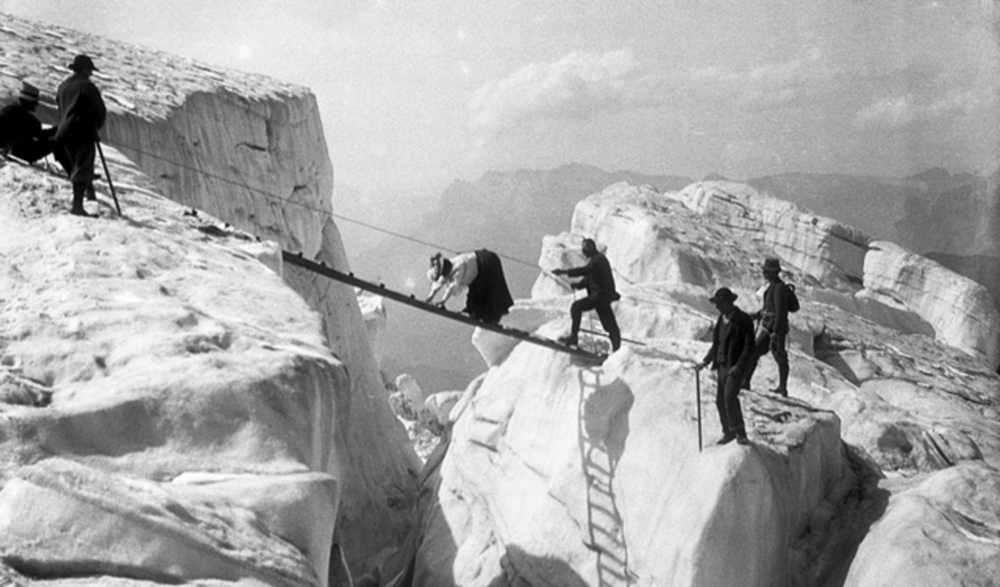
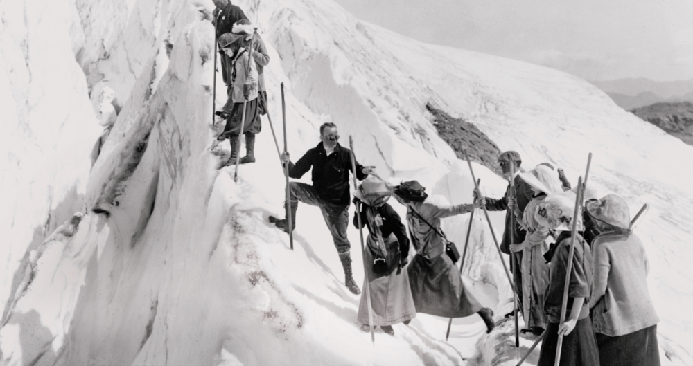

Quote of the Day
Mountain climbing, commonly known as mountaineering, a sport that involves reaching or making an effort to reach high points in mountainous terrain, primarily for personal enjoyment. Although the phrase is frequently used informally to refer to hiking up low mountains with only moderate difficulties, it is actually better reserved for climbing in places where the terrain and weather conditions present enough risks that a certain amount of prior experience will be deemed necessary for safety. Mountaineering is a risky sport to engage in if you are unprepared.
Early attempts to climb mountains were motivated by reasons other than athletic aspirations, such as the need to erect altars, the desire to determine whether ghosts still haunted once-forbidden heights, the desire to gain perspective on one's own or nearby countryside, or the desire to make meteorological or geological observations. Prior to the modern age, there were not many attempts to climb mountains for the purpose of achievement. During the 18th century a growing number of natural philosophers—the scientists of their day—began making field trips into the Alps of Europe to make scientific observations. These researchers had a specific interest in the region surrounding Chamonix, France, due to the massive glaciers on the Mont Blanc chain.
When young Genevese scientist Horace-Bénédict de Saussure first visited Chamonix in 1760, he saw Mont Blanc, which at 15,771 feet [4,807 meters] is the tallest peak in Europe, and made the decision that he would either climb to the top of it or be in charge of its ascent. This is when mountaineering as we know it today was born. He offered a prize for the first ascent of Mont Blanc, but it took a Chamonix doctor named Michel-Gabriel Paccard and his porter named Jacques Balmat more than 25 years to claim their share of the prize money. De Saussure himself reached the top of Mont Blanc a year later.
In the 1950s came a series of successful ascents of mountains in the Himalayas: a first climb by the French of Annapurna I (26,545 feet [8,091 metres]) in June 1950, Nanga Parbat (26,660 feet [8,126 metres]) by the Germans and Austrians in 1953, Kanchenjunga (28,169 feet [8,586 metres]) by the British in May 1955, and Lhotse I (27,940 feet [8,516 metres]) by the Swiss in 1956. In addition, K2 in the Karakoram Range, at 28,251 feet (8,611 metres) the world’s second highest mountain, was first scaled by two Italian climbers in July 1954. Beyond all those, however, the success of the British on Mount Everest (29,035 feet [8,850 metres]; see Researcher’s Note: Height of Mount Everest)—when a New Zealand beekeeper, Edmund (later Sir Edmund) Hillary, and the Tibetan guide Tenzing Norgay stood on the top of the world on May 29, 1953—was a culminating moment. That expedition, which was led by Colonel John Hunt, was the eighth team in 30 years to attempt Everest, and there had also been three reconnaissance expeditions.
Beginning in the 1960s, mountaineering underwent several transformations. Once peaks were climbed, the emphasis moved to a search for increasingly difficult routes up the mountain face to the summit, as in the golden age of the Alpine ascents. A notable example was the 1963 ascent of the West Face of Everest by two members of the first American team to climb the mountain. Moreover, vertical or other so-called impossible rock faces were being scaled through the use of newly developed artificial aids and advanced climbing techniques. Smooth vertical faces of granite were overcome in climbs lasting days or even weeks at a time—for example, the 27-day conquest by American climbers in 1970 of the sheer 3,600-foot (1,100-metre) southeast face of the granite monolith El Capitan in Yosemite National Park in the North American Sierra Nevada range. Other notable developments included an increase in the “Alpine” style of climbing the highest peaks, where mountaineers carried a minimal amount of equipment and supplies and did not rely on porters and other outside support, and a rise in the number of people climbing at high elevations without the use of supplemental oxygen.
Its hard to overstate the importance of good technique. When you focus on technique, moves start to click into place and you find yourself floating up routes that used to be too difficult. This section covers some key concepts: Ways to use your feet Ways to maintain balance Ways to be more efficient
Feet are the foundation of climbing. Lots of beginners try to pull themselves up the wall and quickly tire out. Think about climbing a ladder—you don’t pull yourself up, you step up, and use your arms and hands for balance. It’s the same in climbing. Basic techniques for using your feet are edging and smearing: Edging is exactly what it sounds like: You step on a hold with the rubber on the edge of your shoe. You can use the inside edge, where your big toe offers stability on smaller holds, or you can use the outside edge. Your choice depends on the direction you need to move in order to get on or off the hold. Smearing happens when you don’t have an actual foothold, so you rely on your shoe’s rubber for friction against the rock. Smearing is useful in slab climbing, when you’re on low-angle rock without many defined footholds.
When climbing, keep the following footwork techniques in mind: Keep your feet as close to your body as possible. Look for footholds in advantageous spots so you can keep your balance. Rather than handholds, pay greater attention to foot placements. Keep your foot motionless after you've planted it. As you make your subsequent move, you'll stand a better chance of maintaining the hold. Maintain a low heel so you can make good touch with the wall. Less rubber is on the rock when you have a high heel, which reduces friction and increases the likelihood that you will lever your foot off the wall when you make your next move.
Your hands are pressed against the opposing walls, as are your legs. According to the "three-point suspension" rule, a climber should have "two feet and one hand" or "one hand and two feet" at the rock's surface at all times. As you lift your feet and shift your weight to either hand while moving upward, your hands should maintain your equilibrium. Shift the fourth limb upward while maintaining three of your limbs in contact with the walls. Because you are practically standing on the faces of the walls, you will be moving straight up the mountain mostly with your feet as your hands palm the surfaces of the walls to support your weight and keep you balanced.
By applying pressure with your hands or feet to the opposing wall surfaces while climbing, you can use the counterforce to maintain equilibrium. Put your left foot against one wall while your right foot is against another. This enables you to bridge the chimney gap while standing upright. You can get around expressionless rock by using this method because it feels the most genuine. For climbing up walls while riding on friction, you need to use your hands to palm surfaces or finger-lock crevices. The powerful muscles in your legs provide the force necessary for stemming. Palming is the term for performing a similar action with your hands.
Stemming takes more than just muscle strength; it also calls for hip flexibility and balance. You would do better in these scenarios if you did stretching exercises or even yoga because, in a chimney, your foot usually balances you best when it is higher and farther away than is comfortable. You must learn to trust your instincts, for which you need to be fit enough to follow them, and you must train your hands to firmly grasp even the smallest flaws in the rock. Strength is a metric of a smooth rock climber and refers to how much weight you can handle in any given circumstance. Through rock climbing training, you can improve your power and endurance by becoming more flexible and strong.
In contrast to expedition style (or siege style) mountaineering, which entails setting up a fixed line of stocked camps on the mountain that can be accessed at one's convenience, alpine style involves mountaineering while being self-sufficient, carrying all of one's food, shelter, and equipment as one climbs. A refusal of fixed ropes, mountain guides, high-altitude porters, additional oxygen and doping drugs, as well as transportable hyperbaric bags, is another requirement for alpine style climbing.
As contrast to Alpine style, which includes carrying all of one's food, shelter, equipment, etc. as one climbs, expedition style involves setting up a fixed line of provisioned camps on the mountain that may be visited at one's leisure. Alpine style avoids fixed ropes, porters, and camps, and climbers often only ascend the route once in a continuous push. Expedition style also uses fixed ropes, and climbers (and the porters they regularly utilize) will travel up and down the route numerous times to fix ropes and set up camps. Sir Edmund Hillary and Tenzing Norgay climbed Mount Everest for the first time using an expedition-style technique.
Huts may be well-developed or rustic shelters, located in rural areas at differing elevations along a mountain. These shelters are designed around a shared dining area with private sleeping sleeping quarters. These sleeping rooms are stocked with a bed, pillows, and blankets. Climbers bring a sleeping bag. Like base camp, huts allow a trail to be divided into several days worth of hikes and make it possible for climbers to travel with a reduced pack. During warmer seasons, many huts have full-time staff or volunteers that manage the daily activities necessary to keep the shelter running. In some locations, climbers have the option to purchase snacks, meals, and drinks
A bivouac, commonly referred to as a "bivvy," is a very basic kind of shelter. It does not provide an entirely enclosed shelter, and in some circumstances, it may just entail sleeping outside. Climbers use a sleeping bag and a bivouac sack when out in the open (or bivvy bag). A bivouac sack is a thin, waterproof liner that adds another layer of defense against bad weather and chilly conditions. A crevice in the neighboring rocks or a ditch dug out of the snow, both of which provide extra shelter, are other options for climbers to set up a bivouac. Climbers frequently pick this shelter because it enables them to carry a less pack.
1-Slow down and be calm. Otherwise, a minor incident could turn into a large one.
2-Find out if the party can treat and evacuate them on their own or if more help is needed.
3-If outside assistance is required, use your phone to request it. If there is no signal, someone must leave to call for assistance.
4-Never leave a victim unsupervised unless it is absolutely necessary, such as when climbing in a pair. Send at least two capable and dependable party members. To give the rescue services, note the grid reference, a description of the scene, and the casualty's injuries. (A GPS receiver can be quite helpful in giving rescue teams your precise location.)
5-Transport the victim to safety and keep them warm, hydrated, and at ease. However, if you think a victim may have suffered spinal damage, NEVER move them.
6-Stay close to your ascending route at all times because this is where mountain rescue crews will concentrate their search. Leave a sign directing the rescue crew in your way if you need to locate shelter.
1-Mountain climbing has several risks that could prevent a climber from reaching the summit or even endanger his life.
2-Avalanches, ice and snow slopes, crevasses, weather, climber falls, and altitude are a few of the dangers.
3-Natural catastrophes, such as falling objects or weather events, are perhaps the most anticipated or frequent hazards. Many individuals do not anticipate that physical ailments will cause as many fatalities. Many people can die from cardiac arrests and altitude sickness, especially on taller mountains where there is less oxygen.
4-Rapid ascent up a mountain can lead to altitude sickness, and ultimately, death. Climbing ascents up mountains, such as Mt. Everest, taken three to four months because of the time needed to acclimatize to the lack of oxygen. Once climbers reach a certain elevation, there are strategic base camps set up where climbers will spend days, weeks, or even months getting used to (acclimatizing) to the lack of oxygen.
Climbing Everest Without Supplemental Oxygen
After climbing Nanga Parbat in 1970 with his brother Günther, who passed away on the descent, Messner argued that Mount Everest should be ascended using "fair means" or without the use of supplementary oxygen. According to Messner, using oxygen was dishonest. Since the air is so thin and climbers would suffer brain damage, some physicians believed it was impossible for Messner and climbing partner Peter Habeler to reach the summit of Everest without using oxygen bottles on May 8, 1978. "In this state of spiritual abstraction, I no longer belong to myself and to my eyesight," Messner said of his feelings while on the summit. I am merely a solitary, constricted lung floating above the mists.
New Solo Route up Everest
Two years later on August 20, 1980, Messner again stood atop Mount Everest without oxygen after climbing a new route up the North Face. For this audacious ascent, the first solo new route on the mountain, Messner traversed across the North Face, and then climbed the Great Couloir directly to the summit, avoiding the Second Step on the Northeast Ridge. He was the only climber on the mountain and spent only three nights above his advanced base camp below the North Col.
a three-buckle harness that is lightweight, adaptable, and made for multipitch, mountaineering, and climbing.
Device with multiple uses, including a horizontal lifeline, descender, and work positioning lanyard temporary anchor device
Fall arrester compliant with EN 353-2 and EN 12841-A/B standards, suitable for work at heights and rope access operations.
Sport climbers have an innovative belay gadget that is simple to use. Simple, secure, incredibly light, and small
🏆 1st summit - Tenzing Norgay Sherpa and Sir Edmund Hilary (May 29, 1953)
🏆 Most times at the top- Kami Rita Sherpa (24 times )
🏆 1st person to climb Mount Everest without oxygen -Reinhold Messner (1978)
🏆 Youngest person to climb Mount everest -Jordan Romero (May 22,2010)
🏆 1st Nepalese 14 peak summiteer Mingma Sherpa
🏆 1st summit by woman -Junko Tabei (1975)
🏆 Oldest summiter -Yuichiro Miura ( age 80 )
🏆 1st woman from Nepal to climb Mount everest -Pasang Lhamu Sherpa (April 22, 1993)
🏆 Fastest Everest Summiteer Lakpa Gelu Sherpa (Time Record: 10 hr, 56 Mins
🏆 Youngest 14 peak summiteer
Directed By Adrian